Framing
Framing refers to the wooden structure that holds up a home. In the 1700s it was common to build post and beam style houses in our territory because that's what European settlers were used to doing. Our abundant forests and tall trees quickly changed the way we build, and eventually it became popular to "balloon" frame with tall studs that ran from the bottom plate all the way to the roof. After the Chicago Fire, builders began shifting to "Platform Framing" where you build a floor system, stand up walls, then build another floor or roof on top of that, and continue upward one story at a time. We still use platform framing today.
Before You Start
- Trusses must be designed and confirmed and ordered
- Get lumber on site in build order and covered up
- Print: Blueprint, window order, truss specifications, permit, ext door schedule, and electrical design
- Note plumbing locations
Floor Systems
Floors consist basically of joists and sheathing. Sometimes a joist is doubled up to form a beam, or some other type of beam is incorporated. The layout is often 16" on center (OC) although not always. Joists can be solid sawn lumber like 2x8, 2x10, or 2x12. There are other types of joists including truss joists, floor trusses, engineered joists like LVL, and steel joists, although these are less common in residences.
Materials/hardware to plan for in typical floor framing:
- Sill sealer
- Treated plates and anchor bolts
- Joists, hangers and rim joists
- Ledgers and ledger bolts
- Ladder blocks or similar
- Adhesive and subfloor
- 3" framing nails and 2.5" ring shanked framing nails or screws
Ledgers
Ledgers should be screwed to the existing rim joist of a house using Fastenmaster LedgerLok screws spaced according to the instructions on the package. There are other installation methods, but this is the simplest. Follow the instructions and try to offset screws so they will still be visible after floor joists are installed.
Joists
A treated sill plate, sometimes called a sole plate, should sit on the top of the foundation wall with sill sealer and be bolted down before joists are installed on top of it.
Joists should either sit on a plated foundation wall or in a joist hanger. Crown the joist so that it rests like a mountain, not a valley. Joists should be fastened down to a plate with at least 3 toenails, 2 on one side and 1 opposing. They can also be held down with a hurricane tie or similar bracket for additional uplift support.
When joists are longer than 8', blocking can be installed to help reinforce and stiffen the floor system. Square the joists and check spacing before installing subfloor, and space them so that they don't interfere with critical drain lines or ducts. When building above existing walls, line the joists up with the studs below to aid other trades when running utilities from wall to floor.
Subfloor
Subfloor or sheathing should be glued and nailed using ring shank nails or screwed down with 2.5" structural screws like GRKs. Use the appropriate subfloor glue; do not substitute for PL3X or another kind. Subfloor glue tubes should be cut square so the bead is large and round; it will form a skin on top leaving the inside gooey. When you lay the sheet of subfloor down, the skin will dissolve back into the glue and bond correctly. Other glues do not do this.
It is important that subfloor is nailed or screwed soon after placing to make sure it is tight against the joists before the glue begins to cure. Stagger joints and use full sheets whenever possible.
Note: Prepare for dropped subfloor in walk-in showers to keep slope low.
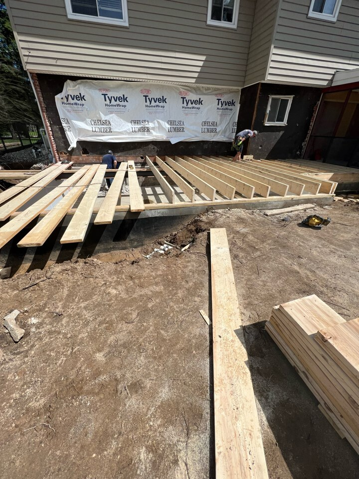
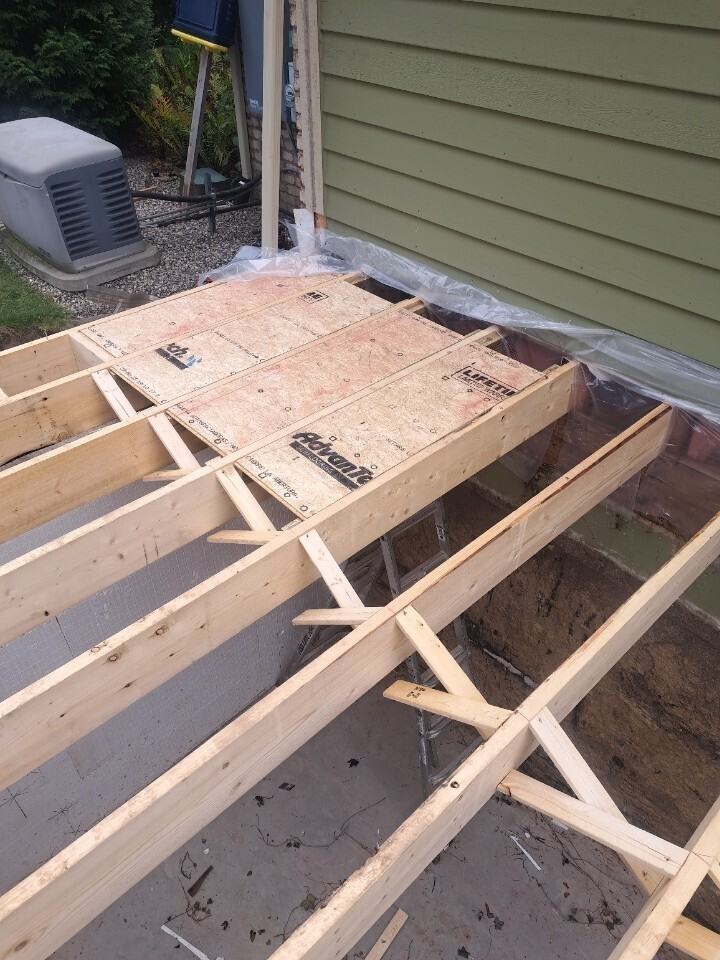
Walls
Walls are built with long plates at the top and bottom and studs between the two. They can also include headers to span openings.
Headers
Headers should be built on the ground when possible. For 2x6 walls, put the framing toward the exterior, allowing insulation and wiring to be installed in the cavity that forms toward the interior. Headers can usually be built with 3" sinkers and do not always need HeadLok screws.
Studs
Studs should lay out on top of floor joists to allow trades to install from floor cavity to wall cavity, this is called stacked framing. Corners and wall bucks should be framed to allow the insulator access to fill later. Walls taller than 10' will need blocking to reduce the size of the cavities to less than 10', this helps slow house fires and aid rescue operations.
Remember to frame walls with studs away from shower valves, light switch locations, etc.
Interior Door Openings
Drawings may call doors out in many different ways. Here are the common equivalents and the Rough Opening (RO) that they require:
Callout: 2668
Meaning: 2'6" wide x 6'8" tall door slab (not frame)
Rough Opening: 2'8" x 6'10.25"
Blocking for Fixtures and Accessories
Install blocking before trades arrive for the following items to be mounted later:
- Toilet roll
- Grab bars
- Robe hooks
- Hand towel holders
- Towel rods
- Shower glass
- Tub rims
- Shower niches
- Shower enclosure edges
- Closet rod/shelf
- Wall hung TVs
- Wall hung toilets or sinks
- Mini split heads
- Floating shelves
- Mirrors
- Medicine cabinets
- Cabinets (center blocking at 32", 54", and 94" AFF for base, wall, and upper cabinets)
- Floating vanities
- Wainscoting
- Stair handrails
Note bathroom accessory locations for blocking (don't rely on memory once the walls are up).
Add blocking, bridging, fire-stops as required (plan it early so cavities aren't inaccessible later).
Wall Sheathing
Install sheathing according to spacing called out in the 2015 Michigan Residential Building Code R602.3(3):
- Edge fastener spacing: 6" OC nailing
- Field fastener spacing: 12" OC nailing
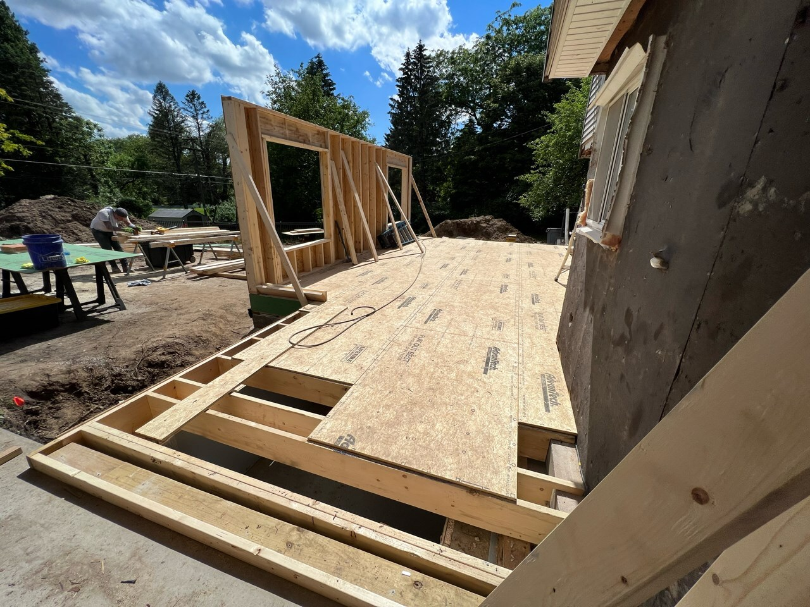
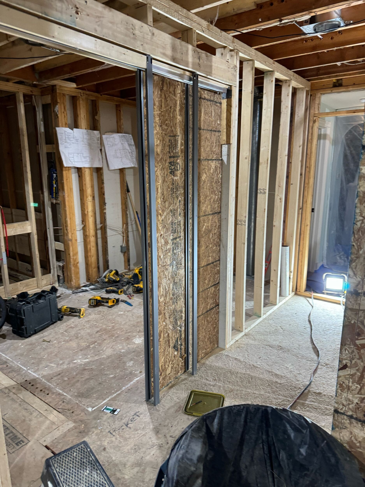
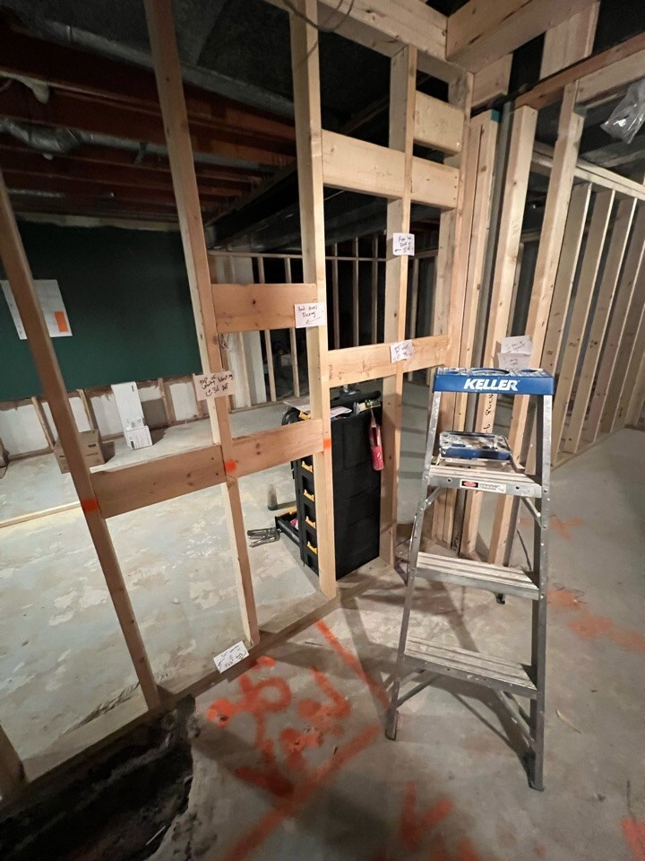
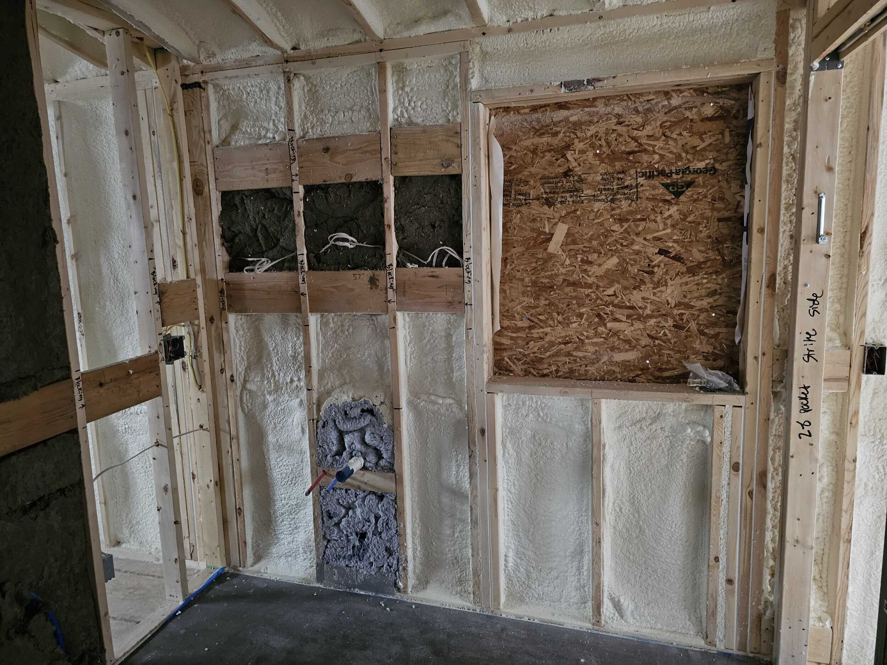
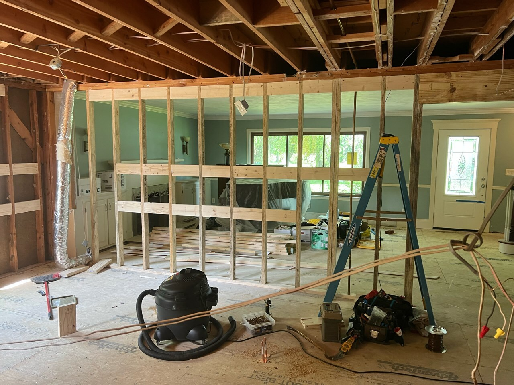
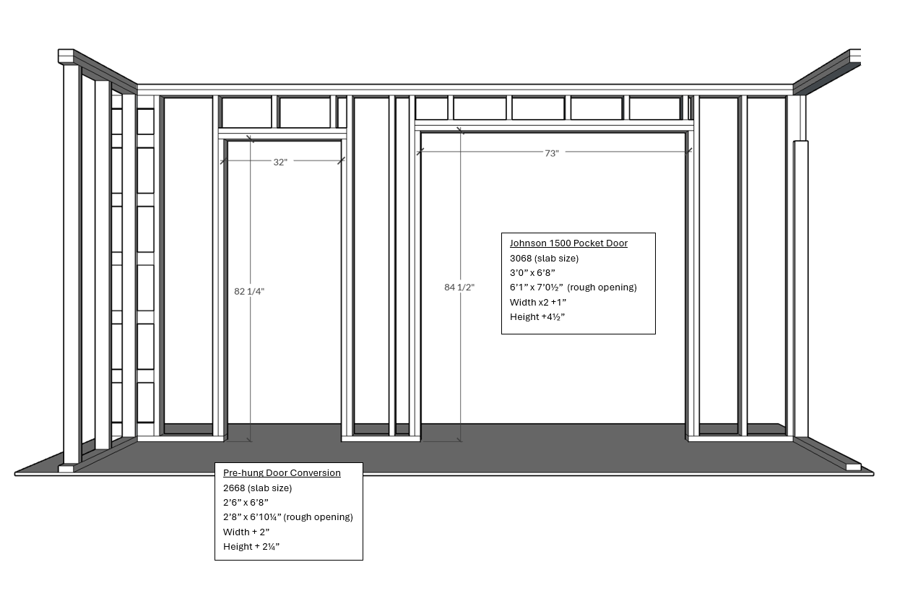
Ceilings
Ceiling joists provide support for ceiling finishes and help tie the structure together. When planning ceiling joists, pay attention to stacked framing to maintain load paths and allow trades to run utilities vertically through the structure. Layout ceiling joists to align with wall studs below and roof framing above whenever possible.
Include drywall nailers where ceiling joists run parallel to walls, as the edge of the drywall will need backing to fasten to. Plan for light fixture locations early, as these may require additional blocking or nailers for support. Recessed lights and ceiling fans need adequate clearance and solid backing.
Don't forget to frame an attic access opening in an accessible location, typically 22" x 30" minimum per code requirements. The access should be located in a hallway or other conditioned space where it can be easily reached, and the opening should be properly trimmed and weatherstripped to prevent air leakage.
Roofs
Roofs can be hand framed using dimensional lumber cut and installed on site or framed with trusses, which are ordered, manufactured off site, and delivered on a flatbed truck.
Don't forget overhangs (confirm on drawings and account for them in framing, fascia, and roofing details).
Send fascia material with the framing package unless it's something thin like aluminum that can be installed after the roof and drip edge are installed. It's important to install the roof as soon as possible, so your framer should have everything needed to get a roof on fast.
Trusses
You must measure on site for trusses; do not trust that the drawing is accurate, although some designs offer more flexibility than others. Trusses can be designed for hipped roofs, vaulted or tray ceilings, overhangs, or with chases built in. Remember that they must be ordered a few weeks or months before you need them.
Delivery must go right to the site because they are generally so large that they require a special permit to ship, and the local lumber yard may not be equipped to handle that. They will arrive on a flatbed truck and be dropped off the back of it into the yard or street, so you will have to arrange to hand carry them to the right location.
Trusses are usually installed on 24" centers and require lacers and drywall backing that isn't always included in the lumber order. Make sure to account for this. Account for skylights when laying out framing. They are best used on standalone buildings or additions that are separated from the main structure, but can be used to extend an existing roofline. Confirm the heel height and roof slope before ordering.
When ordering trusses, remember to:
- Order fascia (Boral or Azek) with the roof framing so that it's ready for roofers
- Double check truss dimensions on site; do not trust the print
- Order lacers per the truss drawing
Hand Framing
Hand cutting a roof means you get dimensional lumber delivered to site and cut rafters rather than installing pre-made trusses. This option can take more time on site but may be a better option in some cases where there are unknown conditions and flexibility is required. It's best used on lay-on roofs or extensions of roofs where planning is important.
Roof Sheathing
Roof sheathing should be 1/2" OSB. When you order your lumber, you may want to order a few rolls of ice and water shield or roof underlayment so that you can waterproof the structure partially or temporarily before the roof is installed.
Zip sheathing is nice for a roof because you can tape the seams and be mostly water tight. However, above a 5 or 6 pitch roof, the coating is quite slippery and much harder to walk safely than standard OSB.
Install plywood clips when your roof framing is 24" OC.
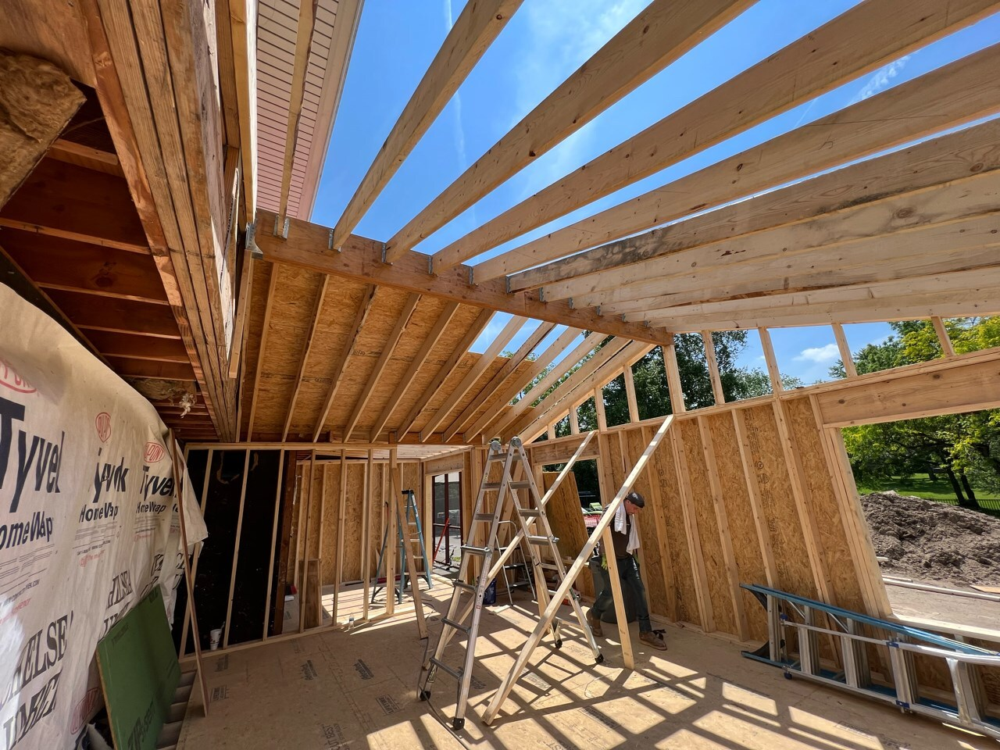
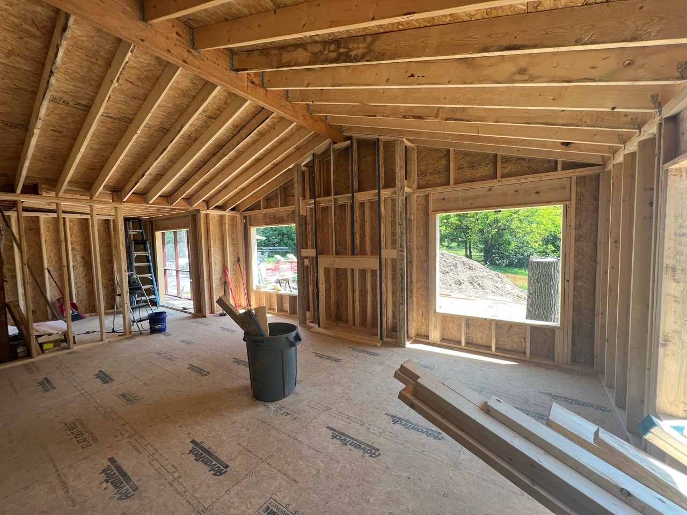
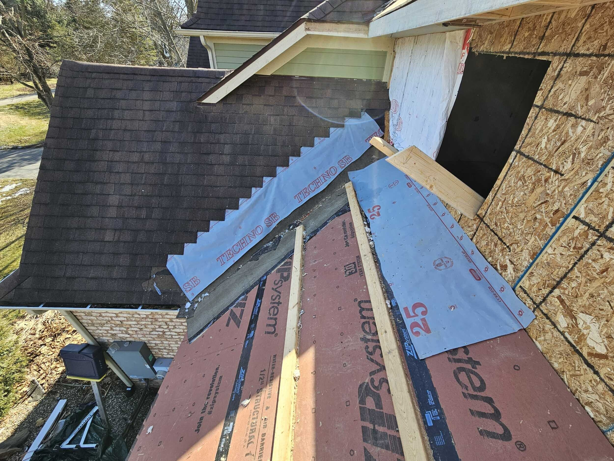
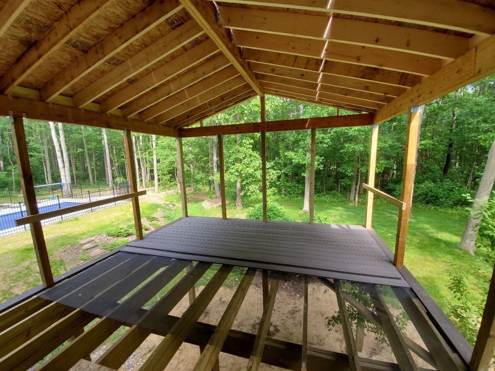
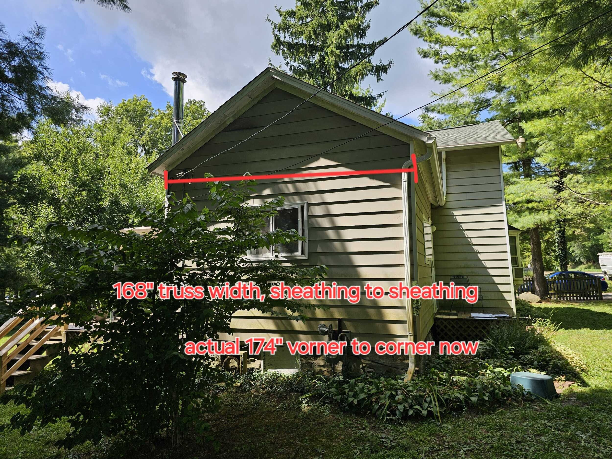
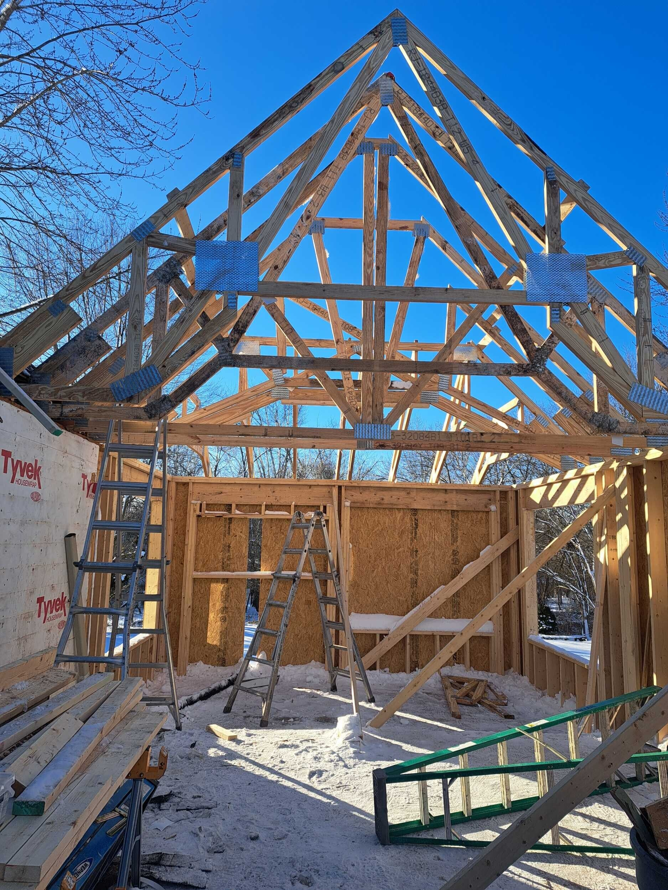
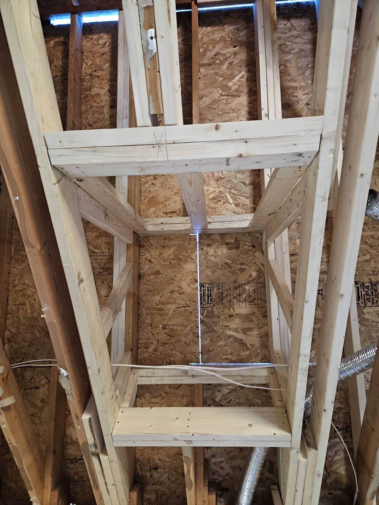
Staircases
Remember that staircases have very specific requirements depending on which building code your jurisdiction enforces. Per Michigan code:
- Minimum clear width: 36" measured above the handrail height. If handrails are installed on both sides, minimum clear width between handrails must be 27"
- Riser Height: Maximum 8 1/4" (8.25") per 2015 Michigan Residential Code, or 7 3/4" (7.75") per IRC 2018 and later, with no more than 3/8" variation between landings
- Tread Depth: Minimum 10" measured horizontally from nosing to nosing with no more than 3/8" variation between landings
- Nosings: Required if the tread depth is less than 11" and must project between 3/4" and 1 1/4"
- Headroom: Minimum vertical clearance of 80" measured from tread nosing vertically to the ceiling
- Handrails: Required when there are four or more risers, and installed between 34" and 38" above the tread nosing. Handrails must be continuous for the full length of the stair flight, from the top riser to the bottom riser and return to the wall or newel post
- Landings: Required at the top and bottom of every stairway, minimum of at least 36 inches
Material Order
When calling to order material, include:
- Treated sill plates
- Sill sealer
- Anchor bolts
- Joists
- Joist hangers
- Rim joists
- Hurricane ties
- Ledgers and ledger bolts (LedgerLok screws)
- Blocking, bridging, fire-stops
- Floor sheathing
- Subfloor adhesive
- Wall plates (single bottom, double or single top)
- Studs (precut or not)
- Headers
- Beams
- Wall sheathing
- Ceiling joists
- Drywall nailers/backing
- Rafters
- Ridge boards
- Lacers (per truss drawing)
- Roof sheathing (1/2" OSB)
- Plywood clips (for 24" OC framing)
- Ice and water shield / roof underlayment
- Pocket door frames
- Stringers
- Temp framing
- Fascia (Boral or Azek)
- Hardware (various)
- Nails/staples (3" sinkers, ring shank nails)
- Screws (2.5" structural screws like GRKs, HeadLok)
- Tapes
- WRB
- Skylights
- Sun tunnels
Materials that often get missed until it's inconvenient:
- Flashing tape, shims, foam, sealant, adhesive, sill sealer
- Plastic, tarps, hand drive nails, GRK screws
Choose a delivery date and location, then build flat, level, plumb, and square.
Best Practices
Lumber staging: Ship a tarp with the lumber so you can cover it to keep it dry. Call out your lumber order to the yard with what each piece is so you can print that list for the carpenter (e.g., "2x8-10' SPF headers"). Have the yard stack the lumber upside down so your plates are on top of the pile followed by joists, then floor sheathing, etc., so you don't have to dig plates out from the bottom of the pile.
Pocket doors: Select a quality pocket door like the Johnson 1500 or better. The best doors have soft closing hardware and can be fitted with inlayed plywood to allow fastening to them during the finish phase. Inlay with actual plywood and not OSB for maximum screw holding.
Inspections
Concealed Space Inspection: Optional inspection to look at spaces that will be concealed before the next inspection.
Rough Building Inspection: This inspection is for the frame but cannot be completed until the trades have all completed their rough inspections. Key items the inspector will look for include that all hardware is appropriately nailed with the correct fastener, that no hardware like joist hangers was missed, and that staircases are compliant.
Client Communication
Clients don't often understand that they need to make most if not all of their selections before this point. They can't still be deciding between bathrooms with mirrors or medicine cabinets because those things get built into the wall. Wainscoting or tile thickness can be important for how you set up those rooms. Some decisions can be left until after, but the builder should explain that making changes later can mean rework and be very expensive.
Resources
- Start Framing Checklist
- Complete Framing Checklist
- Framing & Lumber Order Sheet
- Window Order Form
- Window and Door Install Checklist
- Westbury Aluminum Railing Order Sheet
Last revised: 01/22/2026
Feedback on this page
Spot an error or have a suggestion? Send a quick note. Name and email are optional.